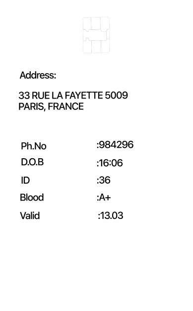
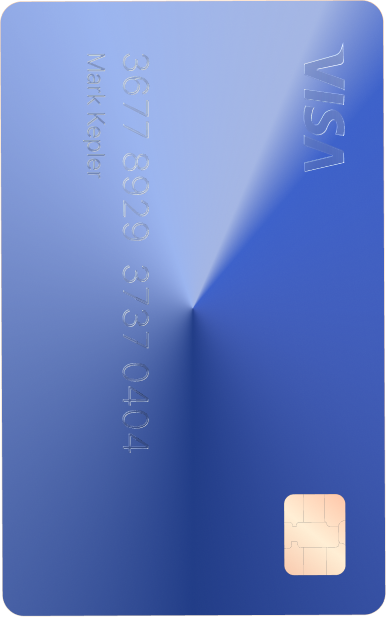
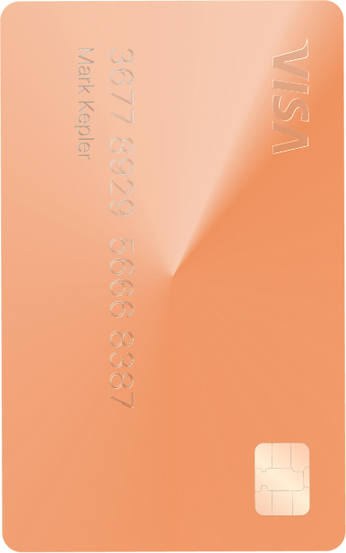

Hero
Clients
Section
Brand foundations for a secure, privacy-first digital identity platform
01 — Foundations
A warm, trustworthy palette: energetic orange for action and emphasis, deep navy for authority and dark surfaces, on a near-white warm base. These swatches are rendered from the live tokens — shared/tokens.css is the single source of truth for the site and this guide alike.
Every chip is painted straight from shared/tokens.css and its hex is read back from the live computed value — these cannot drift from the site.
02 — Foundations
PP Agrandir Regular sets both the display line and every heading — the Wide optical size was retired so the hero and the section heads read as one face. The geometric grotesque carries the brand voice. SF Pro Text Light 300 (--fw-body) sets all body copy; the heavier cuts up to Bold 700 are for UI labels, bylines and emphasis. Each spec below is measured from the live element, so it always reports what the site actually renders.
calc(44 × --u) · Hero headlinecalc(58 × --u) · --fs-display-1-xl · the home hero headline, one step above Display 1.u-accent marks key words.--fs-h-2--fs-body-md / --lh-body-md--fs-story-figure--fw-head · 30px · line-height 1.15--fs-story-headlineThese two exist for one component: the customer-story panel reads as a three-step hierarchy — figure, then headline, then a --neutral-500 body paragraph. It is the one place body copy is deliberately not --navy-800, because the paragraph is subordinate to the two steps above it.
The hero styles are sized off the design frame rather than set in fixed pixels. The frame is 857 wide with 798px of content between the gutters, so --u is one frame pixel expressed in our own content width. Any measurement taken off the design is written as calc(N × var(--u)) and holds its exact proportion at every viewport up to 1440 — the headline keeps its three-line break and the two columns never reflow. Below 768 the frame is too narrow to stay legible, so these fall back to fixed sizes.
| Style | Frame value 857 design | Standard desktop 1366 – 1920+ | Mobile ≤ 767 |
|---|---|---|---|
| Display 1 | 44 frame px | 44 × u → ~76px | 48px |
| Hero lead | 20px | 20 × u → 34.5px | 18px |
03 — Foundations
Every screen is built on one rule: 2rem (32px) of padding on the left and right of every section, at every breakpoint. The design base is Standard Desktop at 1440px, so the shell caps at 1440px and the usable content width is 1376px (1440 − 2 × 2rem).
Product and solution pages run a wider gutter — --section-pad-x-wide, currently 5rem. Their copy is a single centred column, and at 2rem the display-1 headline reached the frame line. The wide value is applied by redefining --section-pad-x on .product-page / .solution-page, so every .container inside inherits it and the full-bleed rows (which offset by calc(-1 × var(--section-pad-x))) stay aligned. Nothing else on the site deviates from the 2rem rule.
| Tier | Width | Container | Notes |
|---|---|---|---|
| Small Mobile | 360 × 800 | 296px | Android / iOS base width |
| Large Mobile | 390 – 430 | 326 – 366px | Current iPhone models |
| Tablet (Portrait) | 768 × 1024 | 704px | iPad |
| Standard Desktop | 1366 – 1440 | 1302 – 1376px | Design base. MacBook Air, standard laptops |
| Large Desktop | 1920 × 1080 | 1376px (centred) | Container caps; gutters grow to 272px |
max-width: 1440px, padding: 0 2rem, margin: 0 auto, box-sizing: border-box. Below 1440px the container simply shrinks — the 2rem padding never changes.The live site wraps header + main in .site-frame: one continuous column with a 1px orange outline. Vertical lines live on the shell once; each band gets a horizontal rule underneath. Token: --frame-line → --orange-300.
.site-frame only, and border-bottom on each top-level band (nav + each section). Keep the last section’s bottom edge off so the shell closes the column.div — that doubles lines, drifts alignment, and breaks the continuous column read.Sections use 96px top and bottom padding on desktop, stepping down through the 8px spacing scale on smaller tiers. The navigation bar is a fixed 80px tall on desktop.
05 — Components
Content surfaces sit on white or cream with soft borders and a subtle expand affordance. Product lists use full-width orange rules under each item — no rule above the first. The active item is marked by its type colour and a short thick cap on the right of the rule beneath it.
Official European Digital Identity wallet development.
Cross-border, standards-based identity exchange.
Privacy-preserving pan-European age checks.
Cryptography and data minimisation at the core.
An uninterrupted marquee of client and partner marks, travelling left. Two identical tracks sit side by side and the belt shifts exactly one track width, so the loop has no seam. Each track uses min-width: 100cqi against the clients band (the site frame width), and space-around spreads the slack. The belt meets the orange outline — it ignores the 2rem content padding, not the viewport edge.
Because one set of marks fits inside the frame width, the belt repeats at exactly that width — so the visible band always holds one whole set and every mark is on screen at every moment. Nothing marches off and waits its turn. That fit is what the height steps below protect: the six marks' aspect ratios total ≈ 21.4, so a set measures height × 21.4 + padding, and each tier's height is the largest that still clears its own narrowest viewport.
| Property | Standard desktop 1366 + | Tablet 768 – 1365 | Mobile ≤ 767 |
|---|---|---|---|
| Logo height — all marks | 40px | 24px | 20px |
| Slot padding (each side) | 24px (--space-4) | 16px (--space-3) | 16px (--space-3) |
| Set width | 1144px | 706px | 620px |
| Band padding, top and bottom | 64px (--space-7) | ||
| Loop duration | 44s linear · paused under prefers-reduced-motion | ||
| Blend | multiply · drops the assets' light backgrounds into the cream | ||
tools/prep-client-logos.py, which flattens the export's grid to white and crops to the ink.Twelve stars turning slowly behind a section's copy, filled with falling code rather than a flat colour. One canvas draws all of it: the stars are clip paths and the rain is drawn through them, so the ring can turn while the characters keep falling straight down — rotating the whole layer instead would read as a spinning texture, not as code falling inside stars. Nothing is on screen until the section arrives; each column carries its own delay so the fill trickles in from the top.
| Property | Value |
|---|---|
| Layer | Absolute, behind the copy, never takes a pointer event |
| Opacity | 0.2 by default, set on the host so a placement can dial it without touching the script |
| Ring | 12 stars, upright as on the flag; the ring turns at 2.5°/sec |
| Rain | One column per 18px cell, each with its own speed, trail length and start delay |
| Trigger | Runs on entering the viewport, resets and replays on re-entry, stops when out of view |
Eight segments turning on the rod's own axis, with the word arriving encrypted and resolving letter by letter as each segment comes to rest. Hover a segment to throw it back into cipher. The file carries no animation — the motion lives in code, so it can be timed against scroll and replayed. Nothing about the geometry is written into the script: the axis is read off the model as whichever one the segments are spread along, and the pivots are set from each segment's own bounds, so re-exporting the model changes the result rather than breaking it.
| Property | Value |
|---|---|
| Geometry | Built in code from the measured cross-section — no model loaded at runtime. Letters come from scytale-graph.svg's own paths. |
| Section | Irregular octagon, 2.5008 × 2.4314. Flats 0.9822 (top/bottom) and 1.6275 (front/back); chamfers 0.8591. |
| Renderer | Three.js r160, vendored locally in shared/vendor/ — no CDN at runtime |
| Segments | 8, each 2.0 long along the rod axis, with a 0.02 seam between them |
| Colour | Orange faces, white edges, white letter on the front face |
| Cipher | Each letter cycles symbols until its own segment lands. Hovering a segment re-encrypts that letter. |
| Turn | Whole facet steps (360°/8 = 45°), so a segment always lands square to camera |
| Camera | Orthographic — the mark is drawn flat, so parallel edges stay parallel and no segment tapers with distance |
| Framing | Frustum fitted to the model's bounds and the viewport aspect — no hard-coded units |
An armillary sphere of three rings on one centre. Each ring is an ellipse whose width, height and rotation are the orthographic projection of a circle tilted in space — which is why moving between the states reads as the sphere physically turning rather than as four separate drawings. The four states below are the whole vocabulary; the live component on the Solutions pages steps through them in order, carrying its numbered tag to a new point on the sphere each time. Retune a state here and both the style guide and the site change together — the geometry lives in shared/orb.css, one custom-property set per [data-orb-state].
| State | Ring 2 — rotation | Ring 3 — centre | Tag anchor |
|---|---|---|---|
| 1 | 0° | 50%, 35.17% | 50.61%, 29.45% |
| 2 | −40° | 59.53%, 61.33% | 33.82%, 33.74% |
| 3 | −40° | 40.47%, 38.64% | 53.97%, 5.63% |
| 4 | 90° | 35.18%, 50% | 70.14%, 50% |
Only three shapes exist, and they are the same in every state: ring 1 is a circle at 100% of the box, ring 2 an ellipse of 99.7 × 40.8%, ring 3 a circle of 70.4%. Rings 1 and 2 stay centred; ring 3's centre rides a circle of radius 14.83% around the sphere's centre. Nothing resizes — only ring 2's rotation and ring 3's position change, which is why the transition reads as the sphere turning.
1creative content
2omni-channel media expertise
3data & mesurement
4vertical AI
A poster frame carrying its own transport. The browser's default control bar is suppressed — it is the one element that would make an otherwise finished section look like a placeholder. Play and pause both stay on screen, and the one that would do nothing is dimmed, so the pair never shifts position as state changes.
| Property | Standard desktop 768 + | Mobile ≤ 767 |
|---|---|---|
| Frame ratio | 16 : 9, held by aspect-ratio so nothing below jumps on load | |
| Corner radius | 24px (--radius-xl) | 16px (--radius-lg) |
| Transport inset | 32px (--space-5) | 16px (--space-3) |
| Glyph height | 28px | 22px |
| Glyph colour | white, 85% — dimmed to 40% when the action is spent | |
| Hit area | 44px tall, from padding rather than a drawn box | |
| Preload | metadata — the poster carries the first paint, not the video | |
06 — Components
Device frame used in the product line section. Each product owns a screen state inside the same shell. In-app type stays on the system stack — it is a phone UI, not brand type.
Interactive default state for the product picker. Glass device frame (58px outer radius), 330 × 700 screen, Home / Activity / Share tabs, credential carousel, detail sheet, and share timer. Use the panel to tune glass live, then copy the CSS variables.
Same glass device shell with the Scytáles mValid scan home — mode tabs (Age / Contact / Full Info / Custom) and a 2×2 method grid (NFC, QR, nearby, card).
mValid listening state after choosing a scan method — document filter, tap-for-NFC, session QR, and countdown timer.
Passport biodata page mockup for Mobile Validator for Travel Documents — photo box, biographic fields, e-passport chip, and machine-readable zone.
07 — Components
Vertical credential / payment card surfaces — dark ID reverse, blue glass face, and rose-metal face. Reference exports for wallet UI.



08 — Components
Same card faces layered with a stepped vertical offset. Hover the front card (closest) to draw the stack up out of the wallet — stack order stays fixed. Glass shader is tunable live below.
09 — Components
Traced from the continuous one-line drawing: black ink is skeletonized into a centerline, sampled as thousands of points in space, then consecutive neighbors are joined with line segments to rebuild the vector.
10 — Products
Operator dashboard for the Age Verification Connector — presented in a macOS-style browser window, matching the product chrome. Shared component: shared/age-verification.html + CSS/JS.
11 — Products
Traced geometry, then shaded to match the product: matte white shell with soft sheen, charcoal bezel, off-white screen, and dark navy recess in the base slot. Same point→line boundaries as the fingerprint pipeline.
12 — Components
Wallet activity card — summary totals and a monthly capsule waveform chart. Hover the card to replay the count-up and bar grow. Shared: shared/wallet-activity.css + shared/wallet-activity.js.
13 — Components
Same dotted land system as the Interoperability globe: uniform sphere samples kept only where a Natural Earth 50m land mask says land (2048×1024 equirectangular coastlines), then drawn as camera-facing points with far-side fade. Four impact states map to the site backbone stats (450m+ / 10+ / 27 / #1). Shared: scytales/assets/innovation/dotted-globe.html?static=1.
14 — Foundations
An 8px base scale governs rhythm. Radii step from tight controls to soft hero surfaces. Elevation is subtle and warm-tinted, never harsh.
15 — Graphic Elements
Four full-bleed plates, each one viewport wide and one viewport tall: a white field carrying a single black outline. The maps are traced the same way the location maps on the About page are — one continuous stroke, no fill. The fingerprint is the existing one-line drawing at plate scale, unchanged.
16 — UI Rules
body-md), ink or orange-500 for section leads. Max ~60ch line length.17 — Brand
The European flag carries twelve five-pointed stars — a fixed number standing for unity and completeness. It has never tracked the number of member states, and did not change through any enlargement. Drawn here to the official geometry, in brand orange rather than the flag's gold.
Construction
1/3 of the height1/18 of the height — so the star radius is exactly 1/6 of the ring radius0.382 × the outervar(--orange-500); the ring rotates counter-clockwise, one turn per 60s18 — Motion
On first visit, a navy overlay builds the Scytáles mark from trickling body-font code — row by row — then holds and fades out. Mark at original loader scale, var(--navy-800) field, Cascadia Code at half --fs-body-md / --fw-body.
| Property | Value |
|---|---|
| Background | var(--navy-800) |
| Mark size | max 420px wide · viewBox 1024×752 |
| Type | var(--font-body) · var(--fw-body) · ½ --fs-body-md |
| Build | 1400ms appear · 2000ms hold · 1400ms disappear · navy fade (no white) |
| Mask | Exact SVG paths · no fill/stroke — letters only |
--navy-800, not black.scytales-code-loader-seen-v3 in localStorage to replay on the live site.